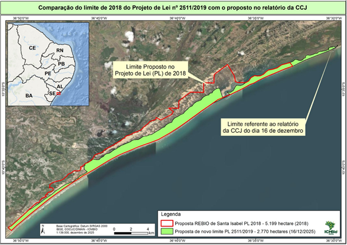

LIDERANÇA DO PT NO SENADO
FEDERAL
COMISSÃO DE CONSTITUIÇÃO,
JUSTIÇA E CIDADANIA – CCJ
4 de março de 2026
Quarta-feira, 9h
1ª Reunião, Extraordinária - Deliberativa
Composição: 27 membros
Presidente: Otto
Alencar (PSD/BA)
Vice-Presidente:
Vanderlan Cardoso (PSD/GO)
Bloco Parlamentar Pelo Brasil – PT/PDT
|
Titulares |
|
Suplentes |
|
Sen. Rogério Carvalho |
|
Sen. Randolfe
Rodrigues |
|
Sen. Fabiano Contarato |
|
Sen. Jaques
Wagner |
|
Sen. Augusta
Brito |
|
Sen. Humberto
Costa |
|
Sen. Weverton |
|
Sen. Ana Paula Lobato |
Assessoria da Liderança do PT:
Daniel Silvestre
Relatoria: Senador ESPERIDIÃO
AMIN
ORIENTAÇÃO: será dada em reunião
ITEM 2. PL 5760/2023: cria instrumentos de proteção a
pessoas resgatadas do trabalho escravo
Autoria: Câmara dos Deputados
(Dep. REIMONT – PT/RJ)
Relatoria: Senador HUMBERTO
COSTA
ORIENTAÇÃO: aprovação do relatório e de requerimento de urgência da
comissão
ITEM 3. PL 2511/2019: altera os limites da Reserva Biológica
de Santa Isabel, em Sergipe
Autoria: Senador ALESSANDRO
VIEIRA
Relatoria: Senador LAÉRCIO
OLIVEIRA
ORIENTAÇÃO: adiamento da discussão
Relatoria: Senador ORIOVISTO
GUIMARÃES
ORIENTAÇÃO: favorável à Emenda n° 4/S do Senador ROGÉRIO
CARVALHO, e
contrário à Emenda nº 5/S
ITEM 5. PL 4980/2019: cria diretrizes para o sistema de
controle interno dos entes públicos
Relatoria: Senador HAMILTON
MOURÃO
ORIENTAÇÃO: favorável ao substitutivo do Relator
Autoria: Câmara dos Deputados
(PRESIDÊNCIA DA REPÚBLICA)
Relatoria: Senadora ELIZIANE
GAMA
ORIENTAÇÃO: aprovação do relatório e de requerimento de urgência da
comissão
ITEM 7. PL 3995/2024: estabelece a política de governança da
administração pública federal.
Autoria: Câmara dos Deputados
(Presidência da República) – PL 9163/2017, na origem
Relatoria: Senador EDUARDO BRAGA
ORIENTAÇÃO: será dada em reunião
Autoria: Senador ALESSANDRO
VIEIRA
Relatoria: Senador MARCELO
CASTRO
ORIENTAÇÃO: aprovação do projeto e das Emendas da CDH
Autoria: CÂMARA DOS DEPUTADOS
(Dep. Laura Carneiro – PSD/RJ)
Relatoria: Senadora MARA
GABRILLI
ORIENTAÇÃO: favorável (sugerimos
emenda de redação)
ITEM 10. PL 421/2023: aumenta o prazo para a representação
nos crimes da Lei Maria da Penha
Autoria: CÂMARA DOS DEPUTADOS
(Dep. Laura Carneiro - PSD/RJ)
Relatoria: Senadora PROFESSORA
DORINHA SEABRA
Autoria: CÂMARA DOS DEPUTADOS
(Dep. Laura Carneiro – PSD/RJ)
Relatoria: Senadora ELIZIANE
GAMA
Ementa: Altera o parágrafo único do art. 73 da Lei nº 9.472,
de 16 de julho de 1997, e dá outras providências sobre o direito de utilização
e compartilhamento de postes, dutos, condutos ou servidão pelas prestadoras de
serviços de telecomunicações de interesse coletivo, concessionárias de energia
elétrica ou prestadoras de outros serviços de interesse público.
Relatório: pela
aprovação do Projeto, nos termos da Emenda nº 1-CI (substitutivo)
Observações:
- a matéria foi apreciada pela CI
(parecer favorável na forma de substitutivo). Se aprovado o substitutivo, ele
será submetido a turno suplementar.
- votação
nominal.
- cabe pedido
de vista.
RESUMO
·
O projeto
estabelece regras para o compartilhamento de infraestrutura (postes, dutos, condutos) entre
prestadoras de telecomunicações, concessionárias de energia elétrica e prestadoras de serviços de petróleo.
o Segundo a justificativa do AUTOR, passados
mais de vinte anos desde a edição da Lei Geral de Telecomunicações (LGT), a
infraestrutura se tornou escassa devido ao aumento da demanda por serviços e à
multiplicação do número de empresas que passaram a fazer uso desses
equipamentos, ao longo dos anos. Hoje, na prática, a regulamentação do uso
compartilhado tem sido feita conjuntamente por Anatel, ANEEL e ANP, apesar de o
art. 73 da LGT determinar que apenas um órgão regulador defina as condições de
compartilhamento de postes, dutos, condutos e servidões, o que causaria
insegurança jurídica e prejuízos aos setores interessados. O AUTOR aponta que,
apesar das decisões conjuntas dos órgãos reguladores, as concessionárias de energia elétrica (antes majoritariamente
estatais) não acatam todas as determinações regulatórias e apresentam contratos
com preços que não atendem ao comando legal de serem "justos e
razoáveis", gerando
desequilíbrio na relação contratual, incentivando ocupação clandestina e agravando
o problema. Assim, o projeto propõe criar uma lei específica que dê legitimidade à atuação
conjunta dos reguladores, estabeleça regras claras de compartilhamento com
prazos e procedimentos definidos, e viabilize uma relação equilibrada e
isonômica entre as partes envolvidas, garantindo preços máximos regulados e
vedando práticas anticompetitivas.
·
O substitutivo da Comissão de Infraestrutura (CI),
sob relatoria do Senador EPERIDIÃO AMIN:
o Cria definições legais
aplicáveis, como de “infraestrutura
compartilhável”, de “titular do ativo”, de “interessado no compartilhamento” e
de “ocupação clandestina” (art. 2º). Insere princípios que guiarão a gestão e a regulação do
compartilhamento, incluindo a
supremacia do interesse público, isonomia, modicidade tarifária, eficiência
econômica, equilíbrio nas obrigações incentivo à concorrência e organização
urbana (art. 3º);
o Mantém a gestão da
infraestrutura (postes) com os titulares do ativo (distribuidoras de energia), que devem disponibilizar informações
técnicas e econômicas de forma transparente. O interessado no compartilhamento
deve celebrar contrato com o titular do ativo ou com terceiro por este
contratado para viabilizar o acesso à infraestrutura compartilhável.
o Permite a terceirização da
gestão da infraestrutura. O
titular do ativo compartilhado poderá contratar terceiro para realizar a gestão
da infraestrutura compartilhável e ceder a cessão de seu direito de exploração
comercial, em termos a ser definido pela ANEEL (art. 7º). A cessão do direito
de exploração comercial da infraestrutura compartilhável também poderá
constituir imposta pela ANEEL, como sanção, à distribuidora de energia elétrica
que tiver desempenho inadequado na prestação do serviço (art. 8º).
o Prevê a divisão de
competências regulatórias:
estabelece clara separação entre ANEEL e ANATEL. À ANEEL compete definir qual
infraestrutura será compartilhada, estabelecer obrigações, fixar preço máximo
orientado por diretrizes como fomento à concorrência e modicidade tarifária, e
destinar parte do excedente econômico para redução das tarifas de energia (art.
6º). À ANATEL compete estabelecer parâmetros técnicos complementares, garantir
isonomia no acesso e fomentar concorrência entre os interessados na utilização
da infraestrutura compartilhável (art. 9º).
o Regularização e fiscalização: a adequação da ocupação irregular da
infraestrutura compartilhável deverá seguir regras conjuntas da ANEEL e ANATEL,
que deverão definir os ativos prioritários para adequação e prever a
responsabilização das distribuidoras de energia elétrica e das prestadoras de
serviços de telecomunicações, considerando indicações dos municípios sobre
áreas prioritárias.
o Municípios: o texto permite que as agências
reguladoras celebrem convênios com municípios para fiscalização da ocupação da
infraestrutura compartilhável, com possível transferência de parte da receita
do compartilhamento como ressarcimento (art. 11).
o Penalidades: cria o art. 180-A na Lei Geral de
Telecomunicações, estabelecendo que ocupação sem contrato configura infração
grave e pode ensejar caducidade da outorga, com salvaguardas para empresas em
negociação ou mediação junto às agências.
o Vacatio legis: prevê que a Lei entrará em vigor m
180 dias.
·
Perante a CCJ, o
relatório do Senador ESPERIDIÃO AMIN é favorável ao substitutivo da CI.
·
A ANEEL e ANATEL
enviaram contribuição conjunta ao substitutivo, sugerindo alterações que não foram
totalmente acolhidas na CI, como detalhes sobre a definição do preço pelo compartilhamento da
infraestrutura e a previsão de participação dos municípios na atividade de fiscalização e nos processos de
indicação de ativos prioritários para regularização.
·
Ante o exposto, nossa orientação será dada em reunião, considerando a eventualidade de o
Governo reiterar o pedido de ajustes.
Ementa: Estabelece medidas de proteção e acolhimento de
trabalhadoras e trabalhadores resgatados de condição análoga à de escravo;
vincula o poder público e os empregadores à obrigação de efetivar a proteção de
trabalhadores no ambiente doméstico; e altera o Decreto-Lei nº 2.848, de 7 de
dezembro de 1940 (Código Penal), as Leis nºs 7.998,
de 11 de janeiro de 1990, 10.593, de 6 de dezembro de 2002, e 11.340, de 7 de
agosto de 2006 (Lei Maria da Penha), e a Lei Complementar nº 150, de 1º de
junho de 2015, para incluir disposições referentes ao combate ao trabalho em
condição análoga à de escravo.
Relatório: Pela
constitucionalidade, juridicidade, regimentalidade e,
no mérito, favorável ao Projeto.
Observações: Parecer nº 112/2025-CAS (Rel. Senador PAULO PAIM): favorável, sem alterações. A
matéria seguirá à CAS.
- Vista coletiva concedida em 17/12/2025.
RESUMO
·
O projeto, de
autoria do Dep. Federal Reimont (PT/RJ) e com importantes
contribuições do substitutivo apresentado pela Dep. Federal Benedita da Silva (PT/RJ), estabelece medidas de proteção e
acolhimento a trabalhadoras
e trabalhadores
resgatados de condição análoga à de escravo, com ênfase no trabalho doméstico, e promove
alterações no Código Penal, na legislação do seguro-desemprego, na Lei de
Organização da Auditoria-Fiscal do Trabalho, na Lei Maria da Penha e na Lei
Complementar nº 150, de 2015.
o O art. 1º define como objeto da lei a promoção e proteção dos
direitos humanos das
trabalhadoras e dos trabalhadores domésticos, assegurando-lhes segurança, saúde, dignidade e trabalho decente, especialmente quanto à proteção e acolhimento
daqueles resgatados de trabalho em condição análoga à de escravo.
o O art. 2º estabelece como dever do poder público e dos
empregadores assegurar
proteção efetiva contra abuso, assédio, discriminação, violência e contra a redução
à condição análoga à de escravo no ambiente doméstico. Prevê, também, participação sindical na formulação
de políticas públicas, criação de mecanismos de acesso à justiça e programas de
acolhimento, reinserção e readaptação das vítimas.
o O art. 3º determina prioridade na concessão dos
benefícios do Programa Bolsa Família à pessoa resgatada de situação de trabalho em
condição análoga à de escravo.
o O art. 4º altera o § 9º do art. 129 do
Código Penal para incluir a pessoa com relação de trabalho doméstico no rol de
sujeitos passivos do crime de lesão corporal qualificada no contexto de violência doméstica.
o O art. 5º aumenta de três para seis parcelas de
seguro-desemprego, no valor de um
salário-mínimo, concedidas ao trabalhador resgatado (art. 2º-C da Lei nº 7.998,
de 1990);
o O art. 6º altera o art. 11-A da Lei nº
10.593, de 2002, para disciplinar o ingresso do Auditor-Fiscal do Trabalho em
domicílio para fiscalização do trabalho doméstico, mediante autorização do empregador
ou do trabalhador residente, além de afastar o critério da dupla visita para
lavratura do auto de infração, caso se verifique a prática de redução a
condição análoga à de escravo.
o O art. 7º acrescenta parágrafo único
ao art. 11 da Lei Maria da Penha, determinando que, se a autoridade policial tomar conhecimento da ocorrência de trabalho escravo no
ambiente doméstico, deverá comunicar o fato ao Ministério
do Trabalho e Emprego e ao Ministério Público do Trabalho no prazo de 48 horas.
o O art. 8º insere o Capítulo I-A na Lei
do Trabalho Doméstico (LC 150/2015) para instituir medidas protetivas de urgência, como: inclusão da vítima no CadÚnico;
expedição de ordem judicial para acesso ao seguro-desemprego; e acolhimento institucional imediato, com aplicação subsidiária da Lei
Maria da Penha quando a vítima for mulher
o Os arts. 9º
e 10 tratam das futuras dotações orçamentárias, com respeito aos limites da LDO
e das disponibilidades financeiras de cada exercício, bem como da vigência
imediata da lei.
·
O Parecer da CDH, sob relatoria do Senador PAULO PAIM, é favorável sem alterações. O texto enfatiza
que a proposição enfrenta problema estrutural relacionado à vulnerabilidade de
pessoas resgatadas de trabalho em condição análoga à de escravo, especialmente
no setor doméstico, marcado por desigualdades de gênero, raça e classe. O
parecer destaca o caráter reparador e protetivo da proposta, que vai além da dimensão punitiva, ao
prever acolhimento, reinserção e proteção social, reduzindo o risco de revitimização.
·
Na CCJ, o relatório do Senador HUMBERTO COSTA é igualmente favorável sem
alterações. No exame de constitucionalidade, afirma que a matéria se insere na
competência privativa da União para legislar sobre direito penal e seguridade
social, nos termos do art. 22 da Constituição, não havendo vício de iniciativa
nem necessidade de lei complementar. Quanto à juridicidade, registra
conformidade com o ordenamento jurídico e com a LC 95, de 1998. No mérito, sustenta que o projeto adota abordagem estrutural e
intersetorial, superando a lógica exclusivamente repressiva ao prever políticas públicas de
acolhimento, assistência e reinserção social das vítimas. Destaca a relevância
da proteção ao trabalho doméstico, tradicionalmente invisibilizado, e a
compatibilização entre fiscalização e garantias constitucionais, como a
inviolabilidade do domicílio.
·
Para discussão, sugerimos os seguintes pontos:
o
Na
atualização recente da “lista suja do trabalho escravo” (Cadastro de
Empregadores que Submeteram Trabalhadores a Condições Análogas à Escravidão,
que o Ministério do Trabalho fez em 2025, casos envolvendo serviços
domésticos surgiram entre as principais atividades listadas.
Assim, o projeto representa um
avanço estrutural no enfrentamento do problema sistêmico da escravidão
contemporânea no Brasil, especialmente ao integrar a temática
da exploração no ambiente doméstico. Embora os grandes números de resgates
estejam associados a atividades como pecuária, agricultura e construção, a
atualização recente dos registros oficiais mostra que o trabalho análogo à
escravidão também ocorre nos serviços domésticos.
o
Estudos sobre trabalho escravo doméstico apontam que,
nessa forma de exploração ocorrida no ambiente doméstico, predominam as
vítimas mulheres com elevada correlação de raça e baixa escolaridade —
aspectos que demonstram a natureza estrutural da violência nesse setor (fonte: “Escravidão na interseccionalidade de gênero e raça”,
de Maurício K. Fagundes, de 2023).
o
Nacionalmente, o número de trabalhadores resgatados de condições análogas à
escravidão tem variado em patamares elevados, com mais de 3.100
pessoas resgatadas em 2023 — o maior número desde 2009 — e 2.772 resgates
realizados em 2025 pelo Ministério do Trabalho e Emprego, com garantias de
verbas rescisórias e direitos trabalhistas assegurados (fonte: Agência Brasil). Esses dados mostram
que, apesar das políticas de fiscalização móvel e da chamada “lista suja”, a
prática persiste e requer respostas
legislativas complementares e específicas, justamente no âmbito
da proteção e acolhimento de pessoas resgatadas, como propõe o Projeto de Lei
nº 5.760/2023.
o
Além das ações repressivas, o Brasil tem sido
reconhecido internacionalmente por seus esforços de combate ao trabalho
forçado e à escravidão moderna: em 2025, o país foi destacado como “País Pioneiro” pela iniciativa da ONU
Alliance 8.7, que visa erradicar trabalho forçado, casamento
forçado e tráfico de pessoas no contexto dos Objetivos de Desenvolvimento
Sustentável até 2030 (fonte: Secom). Isso demonstra que existe um compromisso formal do
governo federal com a temática, mas que ainda é imperativa a implementação de
políticas públicas mais amplas, integradas e sensíveis às especificidades de
setores vulneráveis — como o trabalho doméstico.
o
Inserir diretrizes claras de proteção, acesso à
justiça, inclusão social e medidas de reinserção nos marcos normativos, como
prevê o projeto, não só complementa as ações existentes de fiscalização, mas
também fortalece a capacidade do Estado brasileiro de enfrentar as múltiplas
facetas da exploração laboral contemporânea.
·
Orientamos voto favorável ao relatório e apresentação de requerimento de urgência de comissão. O projeto seguirá ao Plenário.
Ementa: Altera os limites da Reserva Biológica de Santa
Isabel em Sergipe.
Relatório: Favorável
ao Projeto, com três emendas que apresenta.
Observações: a matéria seguirá à CMA, em
decisão terminativa.
- vista coletiva concedida em 17/12/2025.
RESUMO
·
O projeto redefine os
limites da Reserva Biológica (REBIO) de Santa Isabel, localizada no litoral do
Estado de Sergipe. A iniciativa busca promover a redefinição do memorial
descritivo da unidade de conservação federal, com o propósito declarado de
corrigir inconsistências existentes no decreto original de criação da reserva,
datado de 1988 (Decreto 96.999/1988). Segundo o Autor, há falhas técnicas no
memorial descritivo do Decreto de criação da área, sobretudo erros nos
registros de azimute e omissões que resultaram em divergências entre a área
oficialmente indicada e a área efetivamente reconhecida em campo. Esses erros projetariam
indevidamente o polígono da Reserva para a área marinha, gerando insegurança
jurídica quanto aos seus limites e comprometendo a gestão da unidade e a
proteção ambiental. Diante disso, defende a correção do memorial descritivo por
meio de lei, uma vez que a reposição do polígono correto implicará a supressão
da área marinha indevidamente incluída, hipótese que exige intervenção
legislativa. A justificativa acrescenta que a nova delimitação exclui áreas
sobrepostas a atividades industriais, empreendimentos hoteleiros e moradias
locais, concluindo que a medida busca assegurar precisão técnica, segurança
jurídica e adequada gestão de um patrimônio ambiental relevante.
·
O RELATOR apresenta
emendas com três finalidades: 1) transformar a Reserva Biológica em Parque Nacional: 2) apresentar ajustes nos limites da área da unidade de conservação; 3) estabelecer
expressamente a delimitação da zona de amortecimento.
·
Em nota, o Instituto
Chico Mendes de Conservação da Biodiversidade (ICMBio) informa que a versão do Relator promove alterações substanciais em relação ao texto original, com redução drástica da área protegida
da Reserva Biológica de
Santa Isabel para cerca de 1.788 hectares e sua recategorização para Parque Nacional. Essa alteração nos limites comprometeria a integridade dos
ecossistemas costeiros mais
preservados do estado de Sergipe, retirando a proteção de áreas com atributos
ambientais únicos e de reconhecida fragilidade. O ICMBio
destaca que a proposta não foi acompanhada de estudos técnicos ou científicos e não foi previamente
discutida com a autarquia responsável pela gestão da unidade, o que contrasta
com o processo técnico-participativo necessário para esse tipo de proposição.
O ICMBio também
ressalta que a nova proposta desconsidera a necessidade de corrigir
adequadamente os erros materiais do decreto de criação e pode introduzir novos
equívocos cartográficos, inclusive a indicação incorreta da zona de amortecimento em
outro estado da Federação.
O ICMBio também
aponta a existência da Ação Civil Pública (processo nº 0802657-
52.2016.4.05.8500, da 3ª Vara Federal da Seção Judiciária de Sergipe), com
trânsito em julgado em setembro de 2025, que impõe à União obrigação de retificar
os limites da REBIO de Santa Isabel, de publicar o já elaborado Plano de Manejo
da REBIO, o diagnóstico da regularização fundiária e socioeconômica da UC, e um
plano de regularização fundiária.

·
Orientamos o adiamento da discussão, para que se busque
acordo capaz de pacificar a questão a respeito da delimitação da área e da
qualificação da Unidade de Conservação.
Ementa: Dispõe sobre as condições para o uso de dinheiro em
espécie em transações de qualquer natureza, bem como para o trânsito de
recursos em espécie em todo o território nacional.
Relatório: Favorável
à Emenda nº 4-S (depende de relatório a Emenda nº 5-S)
Observações: se aprovado o substitutivo, será ele
submetido a turno suplementar.
- votação
nominal
RESUMO
O projeto estabelece um conjunto de
restrições ao uso, ao trânsito e à posse de dinheiro em espécie, com o objetivo
declarado de prevenir lavagem de dinheiro, corrupção, sonegação e outras
práticas ilícitas. Define como eixo central a proibição do uso de numerário
acima de certos limites, prevendo mecanismos de apreensão, confisco e multa,
bem como atribuindo competências fiscalizatórias ao Conselho de Controle de
Atividades Financeiras (COAF).
O texto inicial veda transações
comerciais ou profissionais em espécie iguais ou superiores a R$ 10.000,00, com
possibilidade de alteração do limite pelo COAF. Prevê apreensão dos valores
utilizados em descumprimento da regra, com confisco na ausência de comprovação
de origem e destinação lícitas, e multa de até 20% se não houver comprovação de
licitude. O COAF conduziria o procedimento de justificação e aplica sanções.
O projeto também proíbe pagamentos de
boletos, faturas e documentos equivalentes em espécie acima de R$ 5.000,00 — ou
R$ 10.000,00 no caso de não residentes — aplicando-se igualmente aos pagamentos
de tributos. Determina ainda que o fracionamento artificial não afasta o cômputo
agregado dos valores.
Há exceções para operações com
instituições financeiras, pagamentos decorrentes de ordem judicial e situações
excepcionais previstas em lei. No tocante ao trânsito, veda o transporte de
valores em espécie acima de R$ 100.000,00, ressalvado o transporte de
instituições financeiras autorizadas. Em relação à posse, veda-se manter
valores acima de R$ 300.000,00, exceto quando comprovado recebimento recente
(até sete dias úteis), e sempre excluindo as instituições financeiras. Em ambos
os casos, aplicam-se as mesmas sanções já previstas no art. 2º.
O substitutivo submetido ao turno suplementar promove ampla reestruturação do
projeto e passa a conferir ao Conselho Monetário Nacional (CMN) a competência
para estabelecer limites e diretrizes, ouvindo o COAF. Dentre as alterações:
·
não cria lei
autônoma e passa a incluir o novo art. 10-B na Lei nº 9.613/1998 (Lei de
enfrentamento à lavagem de dinheiro).
·
deixa de prever
os valores nominais e determina ao CMN, o que estabeleça os limites e
diretrizes para as transações em espécie.
·
determina que
operações acima dos limites que vierem a ser estabelecidos só poderão ocorrer
por meios eletrônicos, atribuindo ao Banco Central a regulação específica.
·
ratifica a
vedação total de uso de numerário em transações imobiliárias, conforme a Emenda
nº 2-CAE.
·
retira do projeto
todo o sistema de apreensão, confisco e multa.
A Emenda nº 4/S, do Senador Rogério
Carvalho, resgata a previsão de sanção administrativa pelo descumprimento da norma: inicialmente,
a apreensão dos recursos; se não comprovada a
origem e destinação lícitas, o confisco
dos valores. Estabelece que os recursos confiscados deverão ser destinados ao
financiamento de atividades de prevenção e combate à lavagem de dinheiro, corrupção e
terrorismo.
A Emenda nº 5/S, do Senador Eduardo Girão, pendente
de relatório, condiciona a eficácia da norma (dos limites a serem criados para
as transações em espécie) à aprovação dos atos normativos do CNM pelo Congresso
Nacional, por meio de Decreto Legislativo.
ANÁLISE
O projeto atende finalidade de
interesse público relevante, encontra-se constitucionalmente enquadrado e foi
aperfeiçoado pelo parecer da CCJ no tocante à técnica legislativa.
Do ponto de vista de responsabilidades
e atribuições administrativas, ao deslocar ao CMN a competência normativa, o substitutivo não especifica
o órgão que executará a fiscalização, a aplicação de sanções, os procedimentos
de monitoramento. Nesse aspecto,
o texto original é mais completo e detalhado: prevê apreensão, confisco e
multa.
O substitutivo reduz a efetividade da norma, pois não contempla apreensão
imediata, confisco prévio, na esfera administrativa, tal como o projeto
original previu (apreensão, confisco sem necessidade de condenação penal
explícita, sanção administrativa via COAF). Dessa forma, a retirada do regime de
confisco/apuração administrativa implica que operações em espécie que
descumpram os limites ficarão sujeitas apenas às medidas ao perdimento como
efeito da condenação criminal transitada em julgado (regime jurídico previsto
no art. 7º da Lei 9.613/1998).
Por essas razões, sugerimos a
aprovação da Emenda n° 4/S, que resgata o potencial de efetividade do projeto,
ao prever que o descumprimento das obrigações nele estabelecidas será
sancionado com a apreensão dos recursos e se for o caso como confisco dos valores, respeitando-se o princípio do contraditório e da ampla defesa. Com isso, resgate-se parte do
Projeto de Lei original, no qual estavam previstas essas sanções.
A Emenda nº 5/S fragiliza o propósito
do projeto, que é fortalecer o combate ao crime, notadamente aos mecanismos de
lavagem de dinheiro, além de constituir mecanismo de duvidosa
constitucionalidade por violação da separação de Poderes, ao prever que ato do
Poder Executivo senha sua eficácia condicionada à aprovação prévia do Congresso
Nacional.
Ante o exposto, sugerimos voto
favorável à Emenda n° 4/S e contrário à Emenda nº 5/S.
Ementa: Estabelece diretrizes para o sistema de controle
interno dos entes públicos, conforme os artigos 37, 70 e 74 da Constituição
Federal.
Relatório:
Favorável ao Projeto, nos termos da emenda substitutiva que apresenta.
Observação: a matéria seguirá à CTFC, em decisão
terminativa
RESUMO
·
O projeto
estabelece diretrizes nacionais para o sistema de controle interno dos
entes públicos, com fundamento
nos arts. 37, 70 e 74 da Constituição. Define que o
sistema de controle interno abrangerá quatro áreas: auditoria, ouvidoria,
correição e controladoria, com detalhamento das atividades a serem
desempenhadas pelos órgãos responsáveis. O projeto também estabelece regras gerais de atuação, inclusive exigência de reputação
ilibada e conhecimento técnico dos agentes, elaboração de plano anual de
trabalho, intercâmbio de informações e publicação de relatórios. Prevê dever de comunicação ao
tribunal de contas de
irregularidades e remessa a autoridades policiais e ao Ministério Público
quando houver indícios de crime. Garante acesso irrestrito a documentos e processos pelos agentes de auditoria, correição
e controladoria, sujeitando a negativa de acesso às sanções da Lei de
Improbidade. Por fim, qualifica como ato de improbidade a negativa de acesso às
informações necessárias às
funções de controle interno.
·
O relatório do
Senador HAMILTON MOURÃO conclui que apenas a auditoria interna pode ser disciplinada no projeto, para que o legislador não ultrapasse
os limites traçados pela própria Constituição (art. 74). O relator assinala que
as funções de ouvidoria, correição e controladoria já dispõem de
regulamentações próprias e não podem ser incluídas em uma lei nacional de
normas gerais. Dessa forma, o Relator propõe substitutivo que:
o mantém apenas normas gerais sobre
auditoria interna governamental, com a reorganização e consolidação das
competências de auditoria, supressão das atividades consideradas excessivamente
amplas ou fora da competência constitucional da União;
o suprime o dispositivo sobre mandato
mínimo para dirigentes de auditoria interna e a previsão que qualificava como
improbidade administrativa a negativa de acesso a informações;
o inclui regras específicas para
reforçar a autonomia institucional dos órgãos de controle interno: dotação
orçamentária adequada, subordinação direta dos dirigentes à autoridade máxima
do órgão, exigência de servidores efetivos, mecanismos de cooperação estruturada
com o controle externo e, ainda, obrigações dirigidas à alta administração
relativas à gestão de riscos e controles internos, alinhando-se aos arts. 48 e 49 da Lei 14.129/2021;
o mantém o dever de comunicação ao
Tribunal de Contas e a possibilidade de encaminhamento às autoridades policiais
e ao Ministério Público;
o preserva o acesso irrestrito aos
documentos necessários às auditorias;
o acrescenta que cada ente federado
deverá editar regulamento próprio para assegurar a execução da futura lei.
·
Orientamos voto favorável ao substitutivo do Relator, reconhecendo os inegáveis
avanços do texto.
Ementa: Dispõe sobre medidas excepcionais destinadas ao
enfrentamento de impactos decorrentes de estado de calamidade pública
aplicáveis às parcerias entre a administração pública e as organizações da
sociedade civil.
Relatório:
favorável ao projeto.
- vista coletiva concedida em 3/12/2025.
RESUMO
·
O projeto,
apresentado pelo Poder Executivo em 2025, trata das parcerias com as organizações
da sociedade civil, em situações excepcionais de enfrentamento a calamidades
públicas, para prever medidas de simplificação e desburocratização.
O projeto é assinado pelos ministros do MGI, CGU e Secretaria Geral da
Presidência e foca nos seguintes aspectos:
o Instituição de parcerias emergenciais, que poderão ser celebradas
com dispensa de chamamento público, considerando presumida a necessidade de
pronto atendimento e risco iminente e gravoso dos direitos da população
atingida. As Organizações da Sociedade Civil (OSC) que já mantém parcerias com
a administração pública ou que sejam credenciadas terão preferência na
celebração destas parcerias emergenciais. Dentre os requisitos para que seja
firmada a parceria é a comprovação de experiência prévia efetiva na área
de objeto da parceria ou em área de natureza semelhante, além de regularidade
previdenciárias, tributária e fiscal. Deverá ser indicada dotação orçamentária,
plano de trabalho e emissão de parecer técnico e jurídico acerca da
possibilidade de celebração da parceria.
o Alteração do objeto de parcerias
preexistentes: poderá ser
realizada para atender as necessidades decorrentes do estado de calamidade,
desde que observados requisitos que garantem a compatibilidade do objeto
ajustado com as finalidades da OSC, nexo causal com a política pública que
originou a formalização da parceria, viabilidade da execução e capacidade para
a prestação do serviço. Nas parcerias que não puderem ser alteradas, o projeto
autoriza a prorrogação de ofício do prazo de vigência pelo prazo de decretação
do estado de calamidade, suspensão parcial ou integral da execução durante o
período e o encerramento da parceria a pedido da OSC, quando houver
impossibilidade ou inviabilidade econômica do cumprimento do objeto.
o Prorrogação, suspensão ou encerramento
das parcerias preexistentes impactadas pelo estado de calamidade que não
possam ser alteradas;
o Simplificação da prestação de contas, com foco nos resultados
apresentados pela execução da parceria e nos impactos econômicos e sociais
causados pelas ações desenvolvidas. Deverá ser apresentada no prazo de até
120 dias após o término de vigência da parceria ou até o término do
estado de calamidade, o que ocorrer por último. Será necessária a
apresentação de relatório contendo a descrição das atividades
desenvolvidas, justificativas para a não realização de metas com o detalhamento
das dificuldades calcadas na calamidade pública e a comprovação de devolução de
saldo remanescente, se houver. A administração pública deve emitir parecer
técnico conclusivo para fins de avaliação do cumprimento da parceria.
o Suspensão do prazo de devolução de
recursos ao erário
relativos à prestação de contas enquanto durar a declaração ou
reconhecimento do estado de calamidade pública para as OSC com sede em
localidade diretamente atingida, possibilitando a devolução em parcelas (até 96
meses) sobre as quais incidirá apenas correção monetária.
·
Notas sobre a
tramitação do projeto:
o Na Câmara dos Deputados, o projeto
recebeu 3 destaques para votação em separado. Dois DVS do Partido
Liberal buscaram suprimir o art. 3º (que prevê a dispensa de chamamento
público) e art. 13 (que institui procedimento simplificado para prestação de
contas). Um DVS do Partido Novo tentou suprimir o art. 18 (que suspende o prazo
para devolução dos recursos ao erário e admite o parcelamento). Todos os DVS
foram rejeitados.
o No Senado, o projeto chegou sob
regime de urgência constitucional (art. 64, § 1º, da CF) e sobrestava a pauta a
partir de 4/10/2025. Nessa condição, entrou na Ordem do Dia de 7/10/2025,
quando a Presidência da República comunicou à Casa o cancelamento da urgência.
·
O relatório da Senadora ELIZIANE GAMA é
favorável, sem alterações. O texto registra que a proposição respeita os princípios
constitucionais que regem da Administração Pública e ressalta que as medidas propostas
buscam conciliar agilidade administrativa, segurança jurídica e
responsabilidade na gestão de recursos públicos
·
Para discussão, sugerimos os seguintes
pontos:
o O projeto resulta da experiência
acumulada pelo poder público no enfrentamento das enchentes no
Rio Grande do Sul (RS), em 2024, e também
recomendações do Conselho Nacional de Fomento e Colaboração (Confoco) para parcerias nestas situações.
o De fato, a experiência mostra que
precisamos de uma regulamentação específica para as relações entre poder
público e OSC nos casos de calamidade pública, em especial porque tais
parcerias objetivam a prestação de serviços públicos de alto impacto para a
população vulnerável durante tais períodos. São casos de experiência prévia:
§ Recursos Executados no RS (2024): as OSCs atuaram em áreas como assistência social, saúde,
abrigo e alimentação:
§ Programa Volta por Cima: auxílio
financeiro direto a famílias atingidas.
§ SOS Rio Grande do Sul: central de
doações e serviços coordenada com OSCs.
§ FUNDEC: repasses a municípios com
apoio de OSCs para execução de ações de defesa civil
§ Cozinhas Solidárias: fornecimento de
refeições a desabrigados
o Ao oferecer regras específicas para a
atuação das Organizações da Sociedade Civil em contextos de calamidade pública,
o projeto tem o intuito de promover uma resposta rápida e eficaz da
administração pública em virtude das demandas decorrentes da situação
emergencial. Também garante maior segurança jurídica para a adequação,
celebração e execução de parcerias em tais contextos.
o Na pandemia de COVID-19, foi preciso editar
a Lei 14.215, de 2021, para instituir normas de caráter transitório, aplicáveis
a parcerias celebradas pela administração pública durante a vigência das
medidas restritivas relacionadas ao combate da pandemia. O objetivo deste Projeto
é estabelecer regras permanentes e específicas aplicáveis a
qualquer situação de calamidade pública que vier a ser reconhecida pelo Poder
Executivo do Estado ou do Distrito Federal ou pelo Poder Executivo federal,
eliminando insegurança de edição de leis de ocasião.
o O projeto não cria despesas,
apenas regula procedimentos a serem aplicados e, de acordo com o informado, é
inspirada em experiências exitosas de parcerias durante a Covid-19 e
direcionado a dar estrutura legal permanente para resposta rápida, para atuação
da sociedade civil em complementaridade com o Estado, conferindo capilaridade e
agilidade na resposta a crises sanitárias, enchentes, secas, fome ou qualquer
outra situação em que seja decretado estado de calamidade pública.
·
Orientamos voto favorável ao relatório e apresentação de requerimento de urgência de comissão. O projeto seguirá ao Plenário.
Ementa: Estabelece a política de governança da
administração pública federal direta, autárquica e fundacional
Relatório:
Favorável ao Projeto e às Emendas nºs 1-CTFC e
2-CTFC, e contrário às Emendas nºs 7 e 8.
- vista coletiva concedida em 3/12/2025.
RESUMO
·
O projeto, apresentado
pelo Poder Executivo em 2017, estabelece a política de governança da administração pública
federal direta, autárquica e fundacional. Define que a
norma também alcança o Poder Legislativo federal, o Poder Judiciário federal, o
Tribunal de Contas da União, o Ministério Público da União e a Defensoria
Pública da União (art.1°).
o Conceitua governança pública como o conjunto de mecanismos de
liderança, estratégia e controle aplicados para orientar e monitorar a gestão,
com vistas à condução de políticas públicas e entrega de serviços de interesse
da sociedade. Apresenta igualmente definições de valor público, alta
administração e gestão de riscos, organizando o marco conceitual básico da lei
(art. 2°).
o Enumera princípios da governança, como capacidade de resposta,
integridade, confiabilidade, melhoria regulatória, prestação de contas e
transparência (art. 3°). Estabelece diretrizes que incluem foco em resultados,
simplificação administrativa, integração de serviços, decisões baseadas em
evidências, padrões elevados de conduta, controles internos baseados em risco,
avaliação de políticas, boas práticas regulatórias e comunicação transparente
(art. 4°). Dispõe também sobre mecanismos de governança estruturados em
liderança, estratégia e controle (art. 5°).
o Cria um sistema de
planejamento do desenvolvimento nacional composto pela Estratégia Nacional de
Desenvolvimento Econômico e Social, pelos planos nacionais, setoriais e
regionais, e pelo Plano Plurianual (art. 7°). A gestão desses instrumentos
deverá adotar mecanismos de participação social (art. 8°). A estratégia nacional deve ter vigência de 12 anos, conter diretrizes, desafios,
cenários e riscos, e ser revista ordinariamente a cada quatro anos ou
extraordinariamente em circunstâncias excepcionais (arts.
9° e 10). Os planos setoriais e regionais passam a ter duração mínima de quatro
anos, conteúdo estruturado (diagnóstico, metas, estratégias, fontes de
financiamento, análise de riscos e consistência com o PPA e o orçamento) e
devem aderir à estratégia nacional (arts. 12 e 13).
o Determina ainda que a alta
administração dos órgãos e entidades estabeleça sistemas estruturados de gestão de riscos e controles internos com princípios
definidos (art. 14), e disciplina a atuação da auditoria interna governamental, que deve adicionar valor, aprimorar
operações e adotar abordagem baseada em riscos (art. 15). Por fim, permite à alta administração
contratar auditoria independente, pessoa física ou jurídica registrada na CVM, para
emitir opinião sobre fidedignidade das demonstrações contábeis (art. 16). A lei
prevista entra em vigor na data de sua publicação (art. 17).
·
O Parecer da CTFC, sob relatoria do Senador EDUARDO
BRAGA, é favorável com duas emendas de redação, apresentadas pelo Senador BETO FARO. A Emenda n° 1-CTFC acrescenta a palavra “mínimo” no art.
9°, para deixar expresso que a estratégia nacional de desenvolvimento econômico
e social será estabelecida para um período mínimo de 12 (doze) anos. A Emenda n° 2-CTFC ajusta o caput do art. 10,
para estabelecer que o rol de informações a constar do relatório da estratégia
nacional é conteúdo “mínimo” a ser apresentado.
·
Na CCJ, o relatório do Senador EDUARDO BRAGA
acolhe
as emendas de redação da CTFC e rejeita as Emendas n° 7 e 8, apresentadas pelo Senador JORGE SEIF. A Emenda nº
7 é considerada excessivamente ampla e capaz de alterar o alcance do conceito
de “alta administração”, ao delegar ao Poder Executivo a definição dos cargos
que a compõem. A Emenda nº 8 trata de matéria alheia ao objeto do projeto, ao
pretender incluir a Estratégia Nacional de Defesa entre os instrumentos de
planejamento.
·
O Ministério da Gestão e da
Inovação em Serviços Públicos (MGI) manifestou posição favorável, com ressalvas ao projeto. na Nota Técnica SEI nº
26580/2025/MGI, considera que o texto é demasiadamente voltado à dimensão do
controle em detrimento do foco na entrega de políticas públicas e na
continuidade dos serviços públicos. Considera importante enfatizar princípios
voltados à efetividade da ação pública, como equidade, sustentabilidade,
estímulo à inovação, experimentação e construção da legitimidade via
articulações, parcerias e redes. A Nota conclui com as seguintes sugestões de
ajuste ao texto (termos em negrito):
“Art. 2º Para
efeitos do disposto nesta Lei, considera-se:
I - governança pública: conjunto de mecanismos de liderança,
estratégia e
de integridade colocados em prática (...)”
“Art. 3º São
princípios da governança pública:
(...)
VII - estímulo à inovação na gestão pública.”
“Art. 4º São
diretrizes da governança pública:
(...)
VIII – manutenção
de processo decisório fundamentado nas evidências e na conformidade legal, na
qualidade regulatória, na desburocratização e no apoio à participação da
sociedade,
observada a discricionariedade do agente público.
(...)
XII - efetividade das políticas públicas;
XIII - fortalecimento das capacidades estatais;
XIV - valorização da continuidade das políticas públicas, em especial
dos serviços essenciais.”
·
Nossa orientação de voto será dada em reunião, considerando o cenário de novas
alterações no texto pelo Relator, inclusive a pedido do Poder Executivo.
Ementa: Altera
os arts. 158 do Decreto-Lei nº 3.689, de 3 de outubro
de 1941 – Código de Processo Penal, e 6º da Lei 13.431, de 4 de abril de 2017, para
prever a realização do exame de corpo de delito de forma humanizada da mulher,
criança, adolescente, idoso ou pessoa com deficiência que seja vítima de crime
cometido com violência.
Relatório: Pela aprovação do Projeto, com o acatamento da Emenda n° 1-CDH,
e rejeição da Emenda n° 2-CDH.
Observações: a matéria foi apreciada pela CDH (parecer favorável,
com duas emendas)
RESUMO
·
O projeto altera o Código
de Processo Penal e a Lei 13.431, de 2017, para prever que o exame de corpo de delito seja realizado em estabelecimento apropriado ao atendimento
humanizado da vítima, quando se tratar de
crimes de violência doméstica contra a mulher, ou crimes violentos contra
criança adolescente, idoso ou pessoa com deficiência. Também prevê que o exame
pericial seja realizado preferencialmente por profissional do sexo feminino, se a vítima for mulher, criança ou
adolescente.
o
A justificativa sustenta
que a finalidade é evitar a revitimização e assegurar atendimento humanizado às
vítimas vulneráveis, inclusive mediante encaminhamento a centros
especializados, como a Casa da Mulher Brasileira, quando não for possível a
realização do exame na própria delegacia especializada.
·
O Parecer da CDH (Rel.
Sen. ROMÁRIO) é favorável, com duas emendas. A Emenda nº 1-CDH amplia o escopo protetivo do projeto, para abranger violência contra a
mulher em geral, e não apenas o contexto de violência doméstica e familiar, como
dispõe o atual inciso I do parágrafo único do art. 158 do CPP. A Emenda nº 2-CDH ajusta a flexão de gênero do termo “capacitado”,
por se referir a profissionais mulheres.
·
Perante a CCJ, o relatório do Sen. MARCELO CASTRO é favorável ao projeto e à Emenda nº 1-CDH, e
contrário à Emenda nº 2-CDH. Se parecer contextualiza a importância do exame de
corpo de delito como peça central para a demonstração da materialidade e
menciona a Lei nº 13.721, de 2018, que já assegura prioridade a exames
periciais em determinados casos. Destaca-se que o projeto aprofunda a diretriz
de atendimento humanizado, prevê preferência por profissional do sexo feminino
e exige capacitação no caso de crianças e adolescentes, buscando reduzir a
vitimização secundária. O relatório também faz referência à rede de
atendimento, que conta com os Institutos Médico-Legais (IMLs),
mas também com as Casas da Mulher Brasileira, os Núcleos de Proteção à
Criança e ao Adolescente Vitima de Crimes das
Defensorias Públicas, bem como as delegacias especializadas. Ressalta, porém, que a cobertura
desses serviços é desigual e que o projeto contribui para enfrentar a insuficiência de
infraestrutura ao induzir a qualificação do atendimento profissional.
·
Orientamos voto favorável ao relatório, destacando os seguintes aspectos:
o
a previsão de
“preferência”, e não de obrigatoriedade absoluta, por profissional do sexo
feminino mitiga risco de inviabilidade prática em localidades com escassez de
peritos, preservando a realização do exame e a colheita da prova. Ainda assim, a plena efetividade da norma
dependerá de políticas públicas de capacitação e estruturação da rede pericial, especialmente em regiões com déficit de IMLs e delegacias especializadas, conforme apontado pelo
Relator;
o
a proposta busca
concretizar direitos fundamentais à dignidade da pessoa humana e à proteção
especial de grupos vulneráveis, além de dialogar com a vedação à revitimização. Ao estabelecer a exigência de atendimento
humanizado e a preferência por profissional do sexo feminino em determinados
casos, a norma reforça diretrizes já presentes na legislação, como na Lei Maria
da Penha e na Lei nº 13.431, de 2017, agregando uniformidade ao tratamento
processual das vítimas.
Ementa: Altera
a Lei nº 11.340, de 7 de agosto de 2006 (Lei Maria da Penha), para estabelecer
que a audiência de retratação nos casos de violência doméstica e familiar
contra a mulher somente seja realizada mediante manifestação expressa da
vítima, apresentada antes do recebimento da denúncia.
Relatório: Favorável ao projeto.
Observações: a matéria foi apreciada pela CDH (parecer favorável).
RESUMO
·
O projeto altera a Lei
Maria da Penha para determinar que a audiência de retratação (ato em que a vítima desiste de sua
representação contra o agressor) somente seja realizada a pedido da vítima, caso ela manifeste expressamente seu desejo
de se retratar. Segundo a AUTORA do projeto, o objetivo é adequar a Lei à
decisão do STJ de março de 2023, no Tema 1.167, na qual se estabeleceu que a
audiência em questão tem por finalidade confirmar a retratação da vítima, não a
representação, e somente deve ser designada mediante manifestação expressa da
vítima antes do recebimento da denúncia.
·
O Parecer da CDH (Rel.
Sen. FLÁVIO ARNS, Rel. ad hoc Sen. PAULO PAIM) é favorável, sem alterações. Ressalta que o
STF, no julgamento da ADI 7.267 (julgada em agosto de 2023), confirmou
entendimento semelhante, ao reconhecer que apenas a ofendida pode requerer a designação de
audiência para renúncia à representação, sendo vedado ao Poder Judiciário
designá-la de ofício ou a requerimento de outra parte. O STF também fixou que eventual não
comparecimento da ofendida à audiência não implica retratação tácita ou
renúncia tácita ao direito de representação.
·
Perante a CCJ, o
relatório da Sen. MARA GABRILLI é favorável ao projeto, sem alterações.
·
Orientamos voto pela aprovação do relatório. O projeto é constitucional e não tem vícios
de juridicidade. No mérito, destacamos que o projeto traz para a Lei Maria da
Penha correções já consolidadas na jurisprudência (STJ e STF), e contribui para impedir a revitimização da mulher, evitando que a audiência de retratação seja usada para expor a mulher ao constrangimento de confirmar sua
representação contra o autor da violência.
o
Apenas sugerimos emenda de redação para aprimorar
a técnica legislativa, de modo a evitar ideias redundantes nos parágrafos, com
redação mais sintética e sistematicamente coesa. O texto proposto consolida em
um único parágrafo o mérito integral do projeto, ou seja: preserva a
delimitação da finalidade da audiência (confirmar a retratação, não a
representação); mantém a exigência de manifestação expressa da vítima;
explicita que essa manifestação deve ocorrer antes do recebimento da denúncia;
conserva a possibilidade de ser apresentada por escrito ou oralmente perante o
juiz; e mantém o registro nos autos.
EMENDA Nº ___ – CCJ (de redação)
Dê-se ao art. 2º do Projeto de Lei nº 3.112, de 2023, a seguinte redação:
“Art. 2º O art. 16 da Lei nº 11.340, de 7 de
agosto de 2006 (Lei Maria da Penha), passa a vigorar acrescido do seguinte parágrafo
único:
‘Art. 16. .............................................................
Parágrafo único. A audiência prevista no caput
deste artigo tem por objetivo confirmar a retratação da vítima, não a
representação, e somente será designada pelo juiz a pedido da vítima, mediante manifestação
expressa de seu desejo de se retratar, apresentada por escrito ou oralmente antes
do recebimento da denúncia, devendo a retratação ser devidamente registrada nos
autos.’ (NR)”
Emenda: Altera o Decreto-Lei nº 2.848, de 7 de dezembro de 1940 (Código
Penal), a Lei nº 11.340, de 7 de agosto de 2006 (Lei Maria da
Penha), e o Decreto-Lei nº 3.689, de 3 de outubro de 1941 (Código de Processo
Penal), para aumentar o prazo decadencial do direito de queixa ou de
representação quando se tratar de crime praticado no âmbito de violência
doméstica e familiar contra a mulher.
Relatório: Favorável ao projeto.
Observações: a matéria foi apreciada pela CSP e pela CDH (pareceres favoráveis)
RESUMO
·
O projeto aumenta de 6 meses para a 12 meses o prazo
para que a mulher exerça o direito de representação nos crimes com violência
doméstica e familiar.
·
Os pareceres da CSP (Rel. Sen.
MARGARETH BUZETTI) e CDH (Rel. Sen. DAMARES ALVES), bem como relatório da Senadora PROFESSORA
DORINHA SEABRA perante a CCJ são favoráveis, sem
alterações.
·
Orientamos voto pela aprovação do relatório. De fato, o prazo de 6 meses para o exercício
do direito de representação, ou seja, do direito de pedir providências penais
para o crime, atualmente vigente para os crimes que exigem representação da
vítima, pode ser insuficiente para a maturação da decisão sobre a questão, em
se tratando de violência doméstica.. Muitas vezes, a
mulher vítima de violência mantém difíceis relações de dependência
afetiva/econômica com o agressor, de modo que apenas o decurso do tempo seja
capaz de permitir decisões importantes.
Ementa: Altera
a Lei nº 8.069, de 13 de julho de 1990 (Estatuto da Criança e do Adolescente),
para dispor sobre os Conselhos dos Direitos da Criança e do Adolescente
nacional, estaduais, do Distrito Federal e municipais.
Relatório: Favorável ao projeto e à Emenda nº 1-CDH, de redação.
Observações: a matéria foi apreciada pela CDH (parecer favorável com
uma emenda).
RESUMO
·
O projeto altera o Estatuto da Criança e do Adolescente
– ECA para criar nove deveres fundamentais para
atuação dos membros dos Conselhos dos Direitos da Criança e do Adolescentes nacional, estaduais, do DF e municipais. Os
deveres incluem: promover a defesa dos direitos da criança e do adolescente;
respeitar a Constituição e as leis; zelar pelo prestígio e pelas prerrogativas do
Conselho; exercer a função com dignidade, probidade e eficiência; participar
das sessões; examinar matérias sob a ótica do interesse público; tratar com
respeito os demais membros e agentes públicos; prestar contas de sua atuação à
sociedade e ao poder público; e respeitar decisões legítimas dos Poderes e dos órgãos
e entidades públicos (novo art. 89-A).
·
Outras inovações preveem:
que o descumprimento desses deveres sujeitará o conselheiro à perda da função
mediante processo administrativo ou por decisão judicial; e que a lei de cada
ente federado disporá sobre a perda da função de membro do respectivo Conselho.
Além disso, exige que os Conselhos elaborem relatórios semestrais detalhados
sobre suas atividades (projetos aprovados, recursos recebidos e destinados aos
projetos atendidos, bem como avaliação de resultados).
·
O Parecer da CDH (Rel.
Sen. FLÁVIO ARNS e Rel. ad hoc Sen.
ASTRONAUTA MARCOS PONTES) é favorável, com a Emenda nº 1-CDH, de redação, que
busca dar mais clareza ao objeto e ao âmbito de aplicação da lei, incluindo
art. 1º com a seguinte redação: “Esta Lei prescreve deveres funcionais de
membros dos Conselhos dos Direitos da Criança e do Adolescente nacional,
estaduais, distrital e municipais e determina sua responsabilização
administrativa conforme lei do ente federado que sediar o respectivo Conselho.”
·
Perante a CCJ, o
relatório da Senadora ELIZIANE GAMA é favorável ao projeto e à emenda da CDH.
·
Orientamos voto pela aprovação do relatório. O projeto não contém vícios de
constitucionalidade ou de juridicidade. No mérito, consideramos que a
iniciativa fortalece a atuação dos conselheiros e aprimora a proteção das
crianças e dos adolescentes. Destacamos os seguintes aspectos:
o
Do ponto de vista
material, a proposição busca conferir maior densidade normativa ao regime
jurídico dos Conselhos dos Direitos da Criança e do Adolescente, especialmente
quanto aos deveres funcionais de seus membros e à responsabilização por
descumprimento. A explicitação de deveres, associada à previsão de processo
administrativo com garantias de ampla defesa e contraditório, tende a reforçar
a accountability institucional e a
legitimidade das decisões colegiadas.
o
A exigência de relatório
semestral detalhado sobre projetos aprovados, recursos recebidos e avaliação de
resultados reforça a transparência e o controle social sobre os Fundos dos
Direitos da Criança e do Adolescente, com potencial impacto positivo na gestão
e na confiança pública.